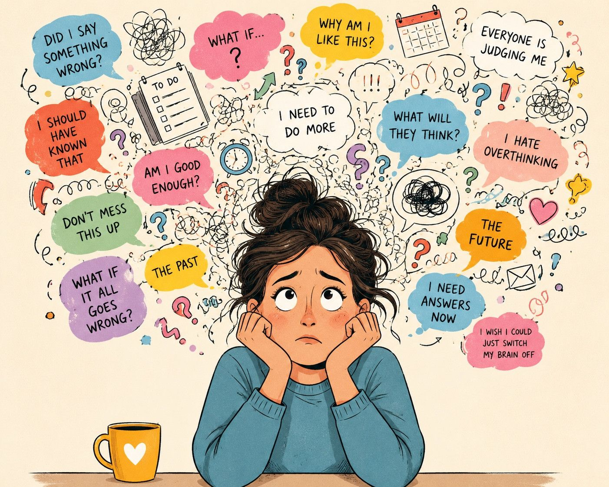

How to Stop Overthinking

You tell yourself, "Stop thinking about it!" Five minutes later, you're still replaying the conversation. An hour later, you're imagining every possible outcome. By bedtime, you're mentally exhausted, you've solved absolutely nothing, and you're seriously wondering whether it's possible to remove your brain for the night so you can get some sleep. Yet somehow, you're still no closer to an answer.
If you overthink everything, this may feel painfully familiar.
Whether it's a decision, a conversation or a sentence you've sent in a text, your brain replays it, dissects it, reframes it, and then starts all over again. You search for reassurance, certainty or the perfect answer, yet somehow the thinking never seems to bring relief.
Here's what most advice gets wrong. Overthinking isn't a thinking problem, it's a nervous system problem wearing a thinking costume.
Why your brain won't let it go
Overthinking disguises itself as productivity. It feels as though you're working hard to solve something. But underneath, it's usually your nervous system trying to create a sense of safety in the face of uncertainty or a perceived threat.
At times it feels like, revving a car engine while it's stuck in neutral. The engine gets louder, you're burning fuel, but it doesn't actually take you anywhere. Round and round the same thought goes because some part of you believes that if you just think about it for long enough, you'll eventually find the answer that makes you feel safe. The problem is that the situations which trigger overthinking are rarely solvable by thought alone.
Especially if they're questions like:
- Did I say the wrong thing?
- Are they annoyed with me?
- Did I make the right decision?
Attempting to find certainty to these questions or any nuanced questions like these where we feel threatened, is like trying to catch water. Unfortunately, unlike math problems, there isn't a neat binary answer or a formula that produces certainty. So our brain keeps searching, hoping that the next lap will finally bring relief.
But that's the trap, the more uncertain you feel, the more you think and the more you think, the more uncertain you often become. When people search for how to stop overthinking, they often assume they need better self-control. Or they become so frustrated with themselves that they start believing there's something wrong with them.
Please know there is nothing wrong with you.
Your mind is doing exactly what it evolved to do, it's trying to protect you. What actually needs your attention isn't your thoughts. It's the part of your body that has become convinced you're under threat, your mind is simply trying to explain why.
In reality, what usually needs attention isn't your ability to think. It's your nervous system's ability to feel safe enough to stop.
Where overthinking often begins
For many people, overthinking didn't appear out of nowhere. If you grew up needing to anticipate other people's moods, read the room carefully, or stay one step ahead to avoid conflict, criticism or disappointment. Your brain learned that vigilance kept you safe; constantly scanning, predicting, preparing. It worked, at least maybe, back then. But as an adult, that same wiring can show up as overthinking every email, every interaction and every decision because some part of you is still operating from:
"I need to get this exactly right or something bad will happen."
The stakes may have changed, the pattern hasn't. This is also why simply telling yourself to "stop overthinking" rarely works, as you're asking the very part of you that's trying to keep you safe to switch itself off.
Spoiler alert...It can't.
Not until it believes it's safe to do so.
What actually helps
1. Stop fighting your brain, instead of thinking:
"I NEED to stop thinking about this." Or becoming so frustrated because the thoughts just won't stop...Pause...Take a breath...Then try saying:
"This is simply my body feeling threatened and trying to protect me."
That small shift can soften and change our way of seeing and feeling what's going on. It replaces self-criticism with curiosity and curiosity can create space. When you stop treating yourself as the problem, you're much more able to respond differently.
2. Calm the alarm before solving the problem.
Because overthinking begins in the body as much as the mind, trying to out think it is a bit like standing underneath a blaring smoke alarm shouting, "Stop there's no fire!", the alarm isn't listening to your logic, it only settles once it believes the danger has passed. Your body needs reassurance before your mind can think clearly.
Communicating to the body that your safe can be as simple as:
A few slow breaths with a longer exhale than inhale. Try this for a least 1 minute.
Feeling both feet on the floor and becoming really aware of where you are.
Looking around the room and naming what you can see, what you can smell, what you can feel.
These aren't magic tricks, but they are calming and are simple ways of telling your nervous system: "We're safe enough right now." Once the alarm quietens, your thinking naturally becomes clearer.
3. Give your mind somewhere to stop
Many people believe that if they stop thinking, they're being irresponsible, instead, try giving the thought a boundary.
"I'll think about this for ten minutes. I'll write down anything important. Then I'm finished for today." This can be rescheduled again later in the day or tomorrow.
This isn't avoidance, it's teaching your brain that thinking doesn't have to be endless to be useful. There will still be tomorrow if the problem genuinely needs more attention.
4. Ask what you're really trying to control
Overthinking is often a strategy for managing something much deeper, not the decision itself, but what the decision represents. Ask yourself:
What am I really afraid will happen if I stop thinking about this?
You might discover you're actually searching for:
certainty
approval
safety
reassurance
the guarantee that you won't make a mistake
Once you can see the real fear, you can begin working with it directly instead of endlessly circling around it.
5. Learn that uncertainty is survivable
This is the slower work and it's usually where lasting change happens. Many people who struggle with overthinking never had the opportunity to learn that uncertainty can be tolerated, so every unanswered question feels urgent, every unknown feels dangerous.
Each time you allow yourself not to know, and discover that you're still okay, you give your nervous system new evidence. And little by little, it begins to trust that uncertainty isn't the threat it once believed it was. Ironically, the moment you stop demanding certainty from life is often the moment your mind begins to quieten. That quiet confidence is what gradually weakens the cycle of overthinking.
The real shift
Learning how to stop overthinking isn't really about thinking less, it's about feeling safe enough not to need the thinking in the first place. That safety doesn't usually arrive through more information or stronger willpower. It comes from understanding where the pattern began, building a different relationship with uncertainty, and giving your nervous system repeated experiences of:
"I can cope, even when things are outside of my control."
The goal isn't to eliminate thought, because your mind will always try to solve problems. That's part of being human and it's one of your greatest strengths. The goal is to stop feeling trapped by your thoughts. To notice them without automatically following them. To trust yourself more than you trust your anxious predictions. That doesn't happen overnight, it happens quietly through hundreds of small moments.
Much like water slowly carving its way through rock, each act of self-compassion and each moment of choosing not to chase certainty gently reshapes the pathways your mind has followed for years.
At first, the change is almost impossible to see, then one day, you notice something surprising, the conversation ends and you don't replay it all evening. You make a decision and you let it stand. You don't feel certain, but you do feel okay.
And that's often the moment you realise you've stopped living inside your thoughts and started living your life again. That change rarely happens through one breakthrough moment, it happens through hundreds of small moments of choosing self-compassion over self-criticism, curiosity over fear, and trust over certainty. At first, those moments feel almost invisible.
But like water slowly carving its way through rock, they quietly reshape something that once felt impossible to change.
Ready to go deeper?
As I write this, I'm creating a course called The Overwhelm Reset because I want these ideas to be accessible to more people.
My aim is to help you understand why your brain and body can sometimes feel hijacked with overwhelm, while giving you practical tools, guided meditations and simple daily practices that help communicate safety to your nervous system. If you're looking for an affordable way to work through this at your own pace, with support along the way, I'd love you to join the waitlist.
https://www.be-bold-coaching.com/courses.html